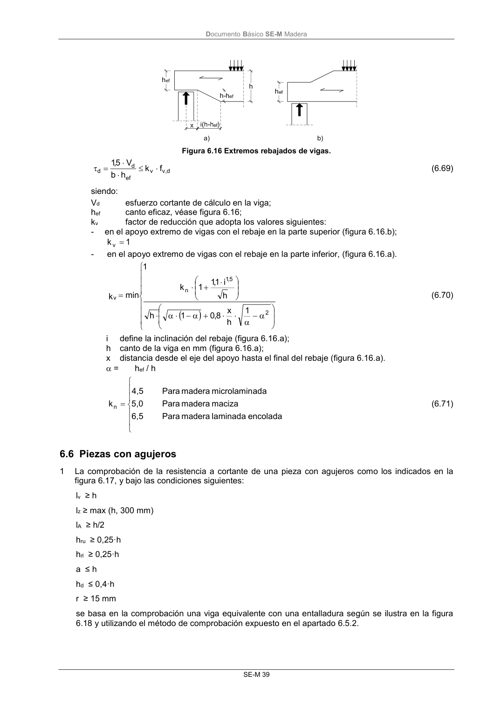

DB-SE-M · 6.5.2 Vigas con rebaje en la zona de apoyo · versión 2019-12-20 · capa oficial
Formatos: JSON compacto · Markdown · PDF fuente
Ámbito del documento · texto del ámbito · documento y tablas
ID técnico a0092 · PDF pág. 44-45 · jerarquía no validada por persona · contrastado con el literal de la página 44 (candidato tipográfico); no validado por persona · padre: raíz
6.5.2 Vigas con rebaje en la zona de apoyo 1 En las vigas con los extremos rebajados debe tenerse en cuenta la influencia de la concentración de tensiones, figura 6.16. Para las vigas de sección rectangular con la fibra sensiblemente paralela al eje esta influencia se considera haciendo la comprobación siguiente: DocumentoBásico SE-M Madera SE-M 39 Figura 6.16 Extremos rebajados de vigas. d , v v ef d d f k h b V 5,1 (6.69) siendo: Vd esfuerzo cortante de cálculo en la viga; hef canto eficaz, véase figura 6.16; kv factor de reducción que adopta los valores siguientes: - en el apoyo extremo de vigas con el rebaje en la parte superior (figura 6.16.b); 1 k v - en el apoyo extremo de vigas con el rebaje en la parte inferior, (figura 6.16.a). 2 5 ,1 n v 1 h x 8,0 1 h h i 1,1 1 k 1 min k (6.70) i define la inclinación del rebaje (figura 6.16.a); h canto de la viga en mm (figura 6.16.a); x distancia desde el eje del apoyo hasta el final del rebaje (figura 6.16.a). = hef / h encolada laminada madera Para 6,5 maciza madera Para 5,0 ada microlamin madera Para 4,5 kn (6.71)

PDF fuente redistribuible: copia fiel enlazada en esta página (SHA256 verificado).